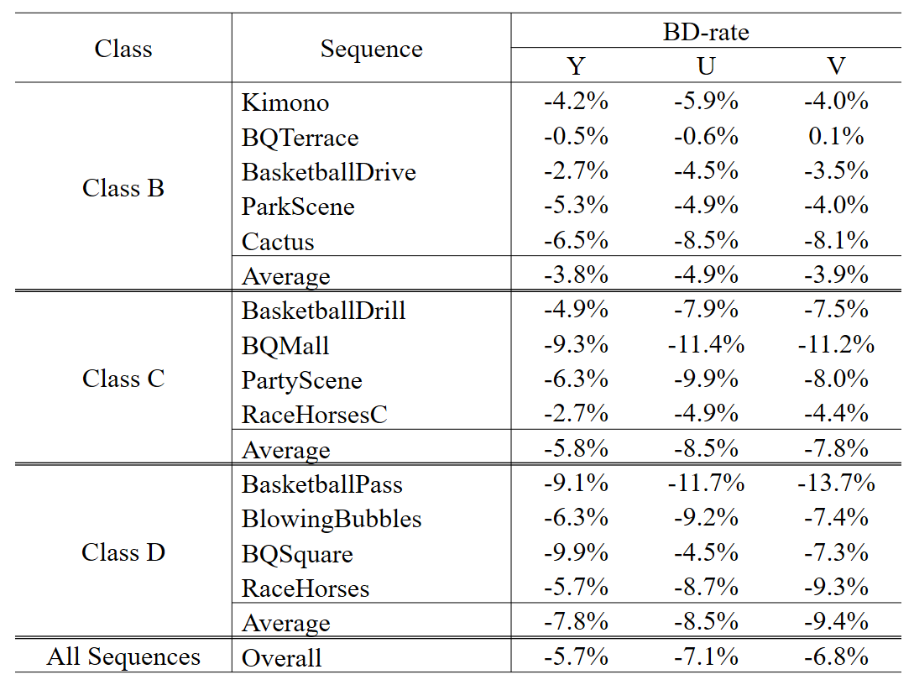

Deep Inter Prediction Via Pixel-Wise Motion Oriented
Reference Generation
Abstract
Inter prediction is an important module in video coding for temporal redundancy removal, where the reference blocks are searched from the previously coded frames and employed to predict the block to be coded. However, apart from regular block-wise shift motion, there usually exists inconsistent pixel-wise motion such as rotation and deformation between blocks, which will largely degrade the prediction performance. In this paper, we propose a Multiscale Adaptive Separable Convolutional Neural Network (MASCNN) to generate pixel-wise closer reference frames for inter prediction. A multiscale network is built to interpolate the target frame from coarse to fine. Reconstruction losses are enforced on each scale to make the network infer the main structure at small scales, which improves the interpolation accuracy of the network. Furthermore, a sum of absolute transformed difference (SATD) loss function is proposed to regularize the network training, which further improves the coding performance. Compared with HEVC, our method can obtain on average 5:7% BD-rate saving and up to 9:9% BD-rate saving for the luma component under the random access configuration.
Framework
Figure. 1. Architecture of MASCNN. Numbers below the feature maps indicate channel numbers. 1/2 and 1/4 mean the relative scale of the filters and images.
Results
Table 1: BD-rate reduction of the proposed method compared to HEVC. 
Download
Citation
@inproceedings{MASCNN, author={S. Xia and W. Yang and Y. Hu and J. Liu}, booktitle={IEEE International Conference on Image Processing (ICIP)}, title={Deep Inter Prediction Via Pixel-Wise Motion Oriented Reference Generation}, year={2019}, }